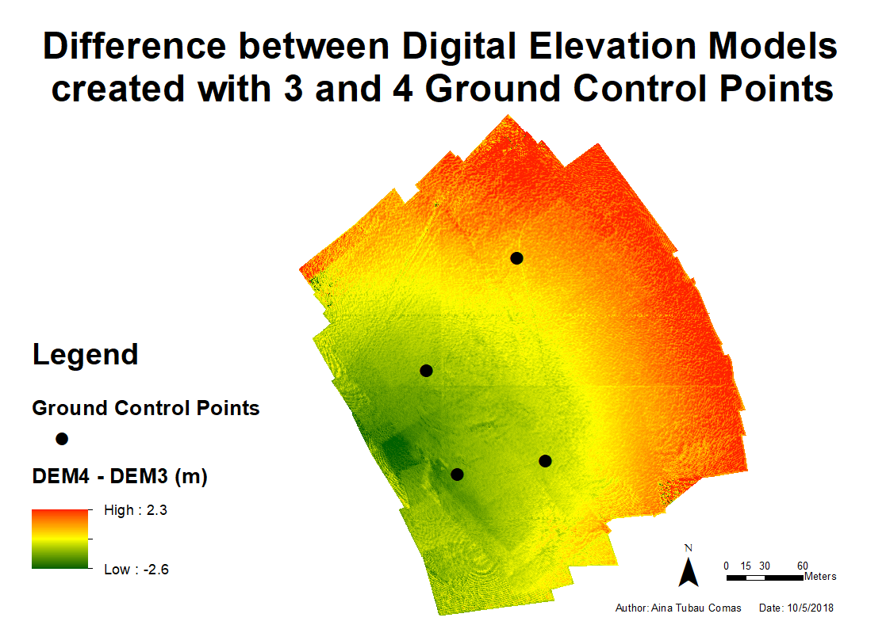

Light Rail

Metadata
Course name
Geo-information Tools
Course code
GRS-20806
Application of the products
Compute route for a Light Rail and it’s costs.
Potential users
Companies
Local governments
Potential users’ requirements
Numbers and maps easy to understand.
Motivation for choice of visualisation type
Thematic map of the spatial cost of a Rail. It is easy to read, and can add written text providing extra information, like the total costs.
Dataset(s) used
DEM
Buildings
Infrastructure
Water
Census
Landcover
Processing method(s)
Join and relate tables
Vector and grid buffers
Generalization of geometry
Create suitability raster
Create cost-path and corridors
Design in ArcGIS
Compute costs
Tools used for implementation
ArcGIS
Model Builder
Reflection on result
The map is quite clear, showing areas with higher cost thicker that tracks with lower costs, and making the Light rail stand over a transparent background, which adds information but does not take over. with areas more expensive being thickest. Nevertheless adding labels for Most Suitable and Less suitable next to the suitability legend would make it better.3 scenarios were plotted due to uncertainties about the real cost, which price is significantly different, but better information about cost would solve the problem. The criteria used to select suitability areas is subjective, and preferred areas could differ applying different criteria. This allows to change suitability according to the user’s preferences.
Hiking and Camping Route

Metadata
Course name
Advanced GIS for Earth and Environment
Course code
Application of the products
Provide multiple-day hikking routes
Potential users
Tourism-related companies
Hikkers
Potential users’ requirements
Easy to interpret
Visualisation type
While hikking, internet access is not an always an option, therefore, an analogic map fits the purpose best.
Dataset(s)
- DEM
Processing method(s)
DEM derivatives
Cost Path and Suitability
Tools used
ASTER GDEM
ArcGIS
Reflection on result
The potential route for hikking is clear. Results could be improved if locations suitable for camping would be bigger (perhaps with a buffer), so they would be more visible. Choice of colours allow to distinguish the different classes in a logical way (red = difficult, green = easy). The path is created to follow the easier route, which wouldn’t be prefered by experienced hikkers. Alternative routes based on difficulty could be added.
Near-Real-Time temperature interpolation

Shiny app:
https://tubau001.shinyapps.io/real-time-temperature
Metadata
Course name
Advanced GIS for Earth and Environment
Course code
Application of the products
Compare interpolation methods and visualize current temperature at country level
Potential users
Anyone interested in current temperature at any country
GIS Scientists
Potential users’ requirements
Quickly understand the temperature from the map. Get an overview of the research done.
Visualisation type
2D reference map allows to show temperature data, colours chosen are related to temperature (blue=cold, red=warm).
Dataset(s)
- Open Weather near real time data
- GDAM Administrative boundaries
Processing method(s)
Read temperature data from API
Select data for chosen location
interpolate
update data
Tools used
R: owm, gstat
shinny app
leaflet
Reflection on result
The poster has an appealing design, and provides an overview of the research, methods, results and conclusions. More information could be added to make it more complete, but it is also good to keep it simple. The shiny app is still very slow due to the large computation time of the interpolation, especially when kriging is selected. Nevertheless, it does its function: it shows temperature near real time (15-30 min difference with real time). The selection of method and country is user friendly, nevertheless, it could still be improved, as there is no action button, to click when user wants to apply a change, and the countries are searched by code, it would be more user friendly for the user to be able to write the country name instead.
Ground Control Points on DEM from Photogrammetry

Metadata
Course name
Advanced Earth Observation
Course code
Application of the products
Gain understanding on Photogrammetry
Potential users
Photogrammetry users
Remote sensing scientists
Potential users’ requirements:
Result easy to interpret
Visualisation type
Dataset(s):
Photographs from UAV
Ground Control Point coordinates
Processing method(s)
Structure-from-motion photogrammetry: Point Cloud, Mesh, Texture, Export DEM
Minus function ArcGIS to compute difference
Tools used
Agisoft Photoscan
ArcGIS
Reflection on result
Result can be read thanks to the colour selection: Positive, negative and areas with differences close to 0 have different colours, and it can be interpreted easily thanks to the legend.